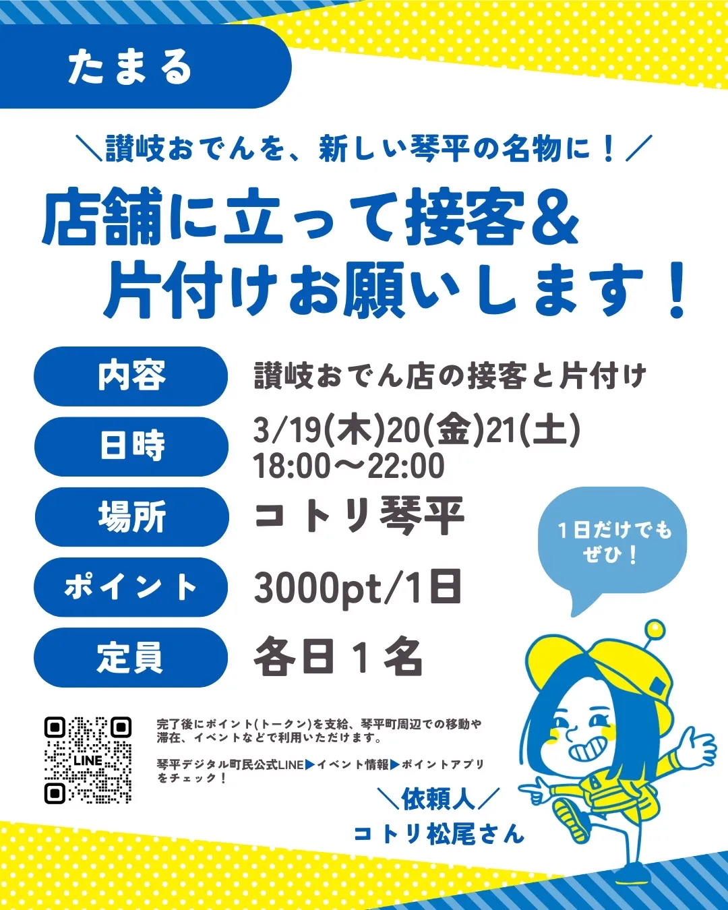
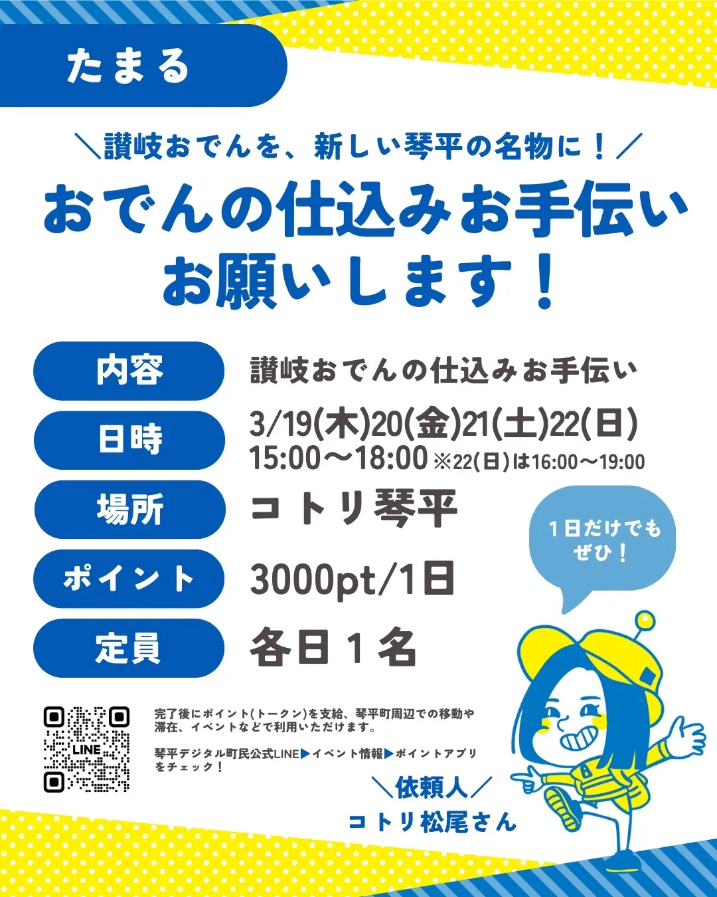
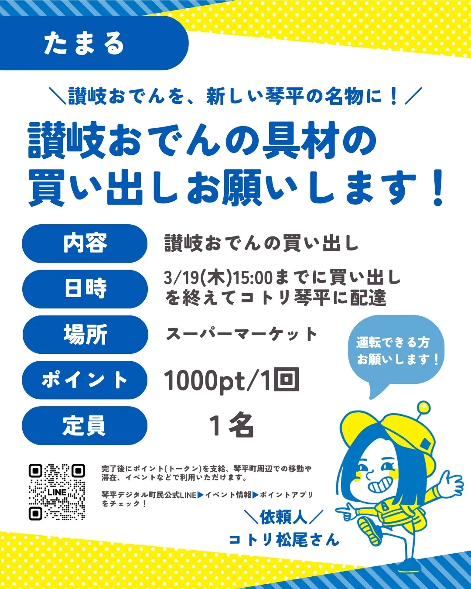
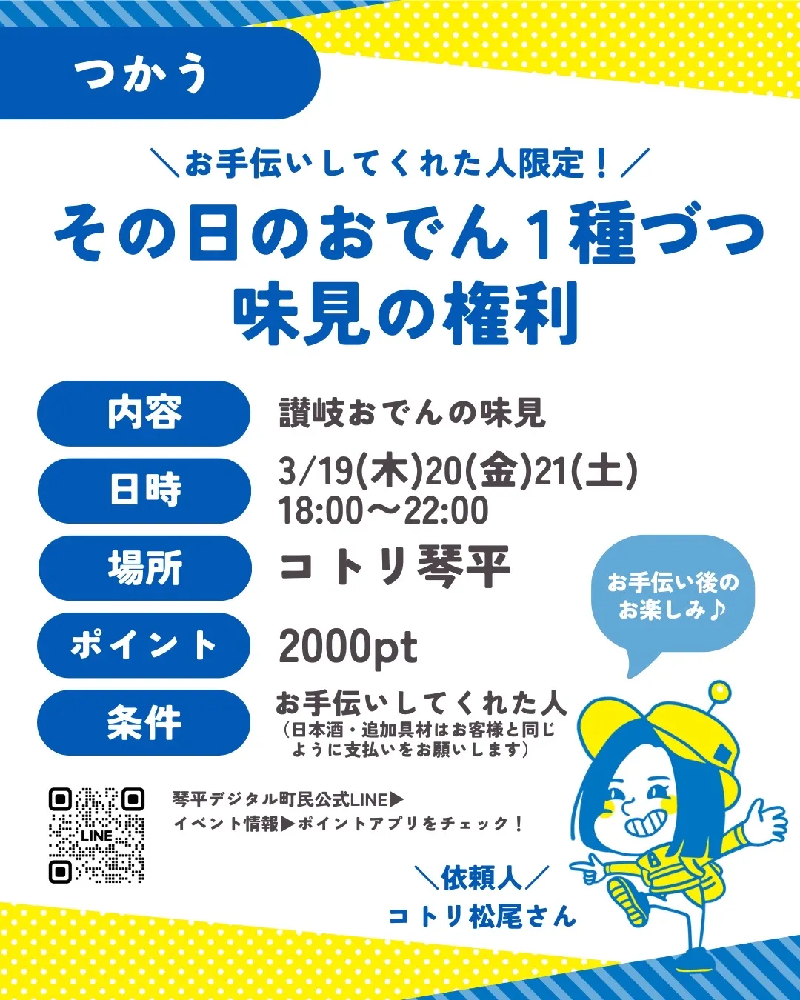

食べに来るだけでもOK。もっと関わりたくなったら、いつでも仲間に。
讃岐おでんは、普通の「お店」とはちょっと違います。
オーナーがいて、従業員がいて、という形ではなく、関わりたい人がそれぞれのペースで参加できる「みんなのおでん屋」です。
お客さんとして食べに来た人が、次は仕込みを手伝い、メニューのアイデアを出し、気づけばSNSで発信している。そんな自然な流れで仲間が増えてきました。
運営の仕組みとしてはDAO（分散型自律組織）を採用していますが、難しいことは何も知らなくて大丈夫。「面白そうだから来てみたら、結果的にDAOでした」くらいの感覚で関わってもらえたら嬉しいです。
「全部やらなきゃ」なんてことはありません。自分に合った関わり方を選んでください。
毎月19〜21日の営業日に、お客さんとして来てください。讃岐うどんの出汁で炊いたおでんを食べて、「おいしい」と言ってくれるだけで、プロジェクトの力になります。
毎月22日（フーフーの日）は「讃岐おでんの作戦会議」。これからの讃岐おでんをみんなで考える日。新メニューのアイデア出しや、今後の展開を語り合います。参加費2,000円（おでん・ドリンク付き）。初めての人も歓迎です。
Peatixで申し込む仕込み、接客、片付け、メニュー開発のアイデア出し、SNSでの発信。得意なことや空いている時間で、できることをやってもらえたら。貢献に応じてポイントが貯まります。
SNS担当、仕入れ連絡、議事録担当、集客リーダーなど、特定の役割を持って継続的に関わる。「讃岐おでんを文化にする」チームの一員として。
運営の中核として、方針決定や新しい展開を一緒に考え、動かす。収益が出た際には分配の対象にもなります。実績ベースで声をかけています。
1日だけでもOK。できることを、できるときに。お手伝いにはポイントが貯まります。

お店に立って、お客さんへの声かけや片付けをお願いします。おでんの知識は不要、笑顔があればOK。

おでんの具材の下ごしらえや仕込みをお手伝い。料理が好きな方、一緒に讃岐おでんを作りましょう。

スーパーで具材を買ってコトリ琴平まで届けてもらうお仕事。運転できる方を募集中。
営業日の写真撮影、InstagramやSNSでの発信
新しい具材や味噌のアイデアを出して、22日の作戦会議で試作
友人・知人への紹介、イベント出展時の手伝い
議事録の作成、仕入れの連絡、スプレッドシートの管理
讃岐おでんプロジェクトでは、活動への貢献を「ポイント」で可視化しています。航空会社の生涯マイルのように、あなたの関わりの記録として蓄積されます。
ポイントは直接お金には換わりませんが、貢献度の高いメンバーには収益分配の対象になる仕組みを準備中です。

毎月19〜21日の営業日にコトリへ。予約不要です。
営業日や活動の情報が流れます。39人が参加中。
毎月22日の作戦会議に参加して、メンバーと話してみてください。Peatixで事前申込みできます（当日参加もOK）。
得意なこと、やってみたいことがあれば声をかけてください。役割は自分で選べます。
讃岐おでんプロジェクトに関わるメンバーの一部をご紹介。
地域おこし協力隊 / ポイント設計・システム
コトリ / 店舗運営・金銭管理
琴平バス / 全体統括
広報・SNS発信・お手伝い募集
お酒セレクト・雰囲気づくり
コアメンバー
他にも多くのメンバーが関わっています。次はあなたの番かも？